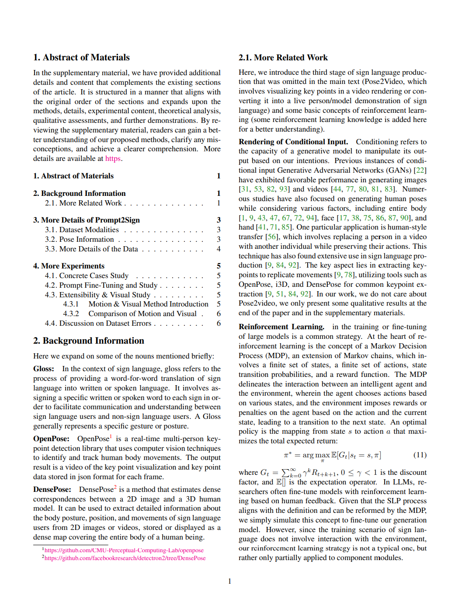

{kind=link}
Paper
Prompt2Sign (tools)
Additional details

Methodology
Code (stay tuned)
|
|
|
|
|
|
|
|
|
|
|
|
|
|
|
|
|
|
|
|
|
|
Paper |
Prompt2Sign (tools) |
Additional details |
Methodology |
Code (stay tuned) |
|
(a) The control surface on the wing, which is operated by horizontally shifting the stick to the right and left, enables lateral movement.
|
(b) Allow me to demonstrate the correct form for a proper pike position.
|
(c) Allow me to showcase this demonstration on my back as it is much more convenient.
|
| DEMO: We give some examples of better prediction results, below each video is their input text. | ||
|
ASL
Input: Here's a little example here I'm going to give you some insight on though.
Translation: Here's a little example here I'm going to give you some insight on though. |
DGS
Input: Im Südostraum ist es vorteilhaft, ein Hochdruckgebiet kommt von Belgien.
Translation: In the southeastern region it is advantageous, a high-pressure system is coming from Belgium. |
KSL
Input: 염려하다.
Translation: worried about. |
DSGS
Input: Bei dieser Firma bestelle ich immer die Plastikbecher.
Translation: I always order plastic cups from this company. |
|
LSF-CH
Input: Le leader du parti socialiste.
Translation: The leader of the Socialist Party. |
LIS-CH
Input: Io voglio comprare una nuova borsa.
Translation: I want to buy a new bag. |
LSA
Input: desayuno.
Translation: breakfast. |
TSL
Input: Animasyon atölyesinde 9-12 yaş arası işitme engelli çocuklar animasyon sanatını öğrenecekler.
Translation: Children who are deaf or hard of hearing (aged 9-12) will learn about animation art at the animation workshop. |
|
QP: Synthetic sign language video generated through style transfer modeling (intermediate input video has undergone processing like acceleration and rendering; results under Ideal Future Conditions).
|
|||
|
|
|
|
|
| Comparison of different models of SignLLM with baseline. Models M and T represent MLSF and Text2LangGloss trained ASLP models, respectively. |
|
|
| Comparison of different models of SignLLM with previous work. |
|
|
| SignLLM-40M-Base results for Text to Pose on the ASL part of Prompt2Sign, with multiple data augmentation techniques. Base: Multi-Language Switching Framework with Normal MSE Loss, FP: Future Prediction, GN: Gaussian Noise, Text2LangGloss: Text2LangGloss with Normal MSE Loss, PLC: Priority Learning Channe |
|
|
| the comparison of the effect of different Settings on DTW values (the lower the better) at different times is determined by epoch. |
### JSON file:
{
"version": 1.3,
"people": [
{
"person_id": [
-1
],
"pose_keypoints_2d": [
666.535,
219.883,
...
# We only get eight key points in the upper body(24 number).
],
"face_keypoints_2d": [
624.108,
204.299,
0.813047,
# We don't train the face.
],
"hand_left_keypoints_2d": [
694.829,
455.679,
0.352355,
...
# 21 key points, 63 values.
],
"hand_right_keypoints_2d": [
516.344,
348.757,
0.0184774,
...
// 21 key points, 63 values.
],
"pose_keypoints_3d": [],
"face_keypoints_3d": [],
"hand_left_keypoints_3d": [],
"hand_right_keypoints_3d": []
}
]
}
 |
SignLLM: Sign Languages Production Large Language Models arXiv, 2024. (arXiv) |
 |
(Additional Details/ Supplementary Materials) |
AcknowledgementsAdditionally, we have noticed spontaneous promotion from over 80-120 marketing media outlets and independent content creators, but they may have some misconceptions or exaggerations about our model. Our model takes input text or prompts to generate videos of sign language pose in various languages. Certain conditions need to be input into the model for further processing to obtain the final videos, so we need to work even harder to strengthen the end-to-end capabilities (ie, the pose video output from the model needs to be processed to achieve the effect of real people). We are grateful to our supporters including Microsoft, Amazon, Swiss TV, as well as organizations and accessibility practitioners worldwide for their continued support. |
Contact |